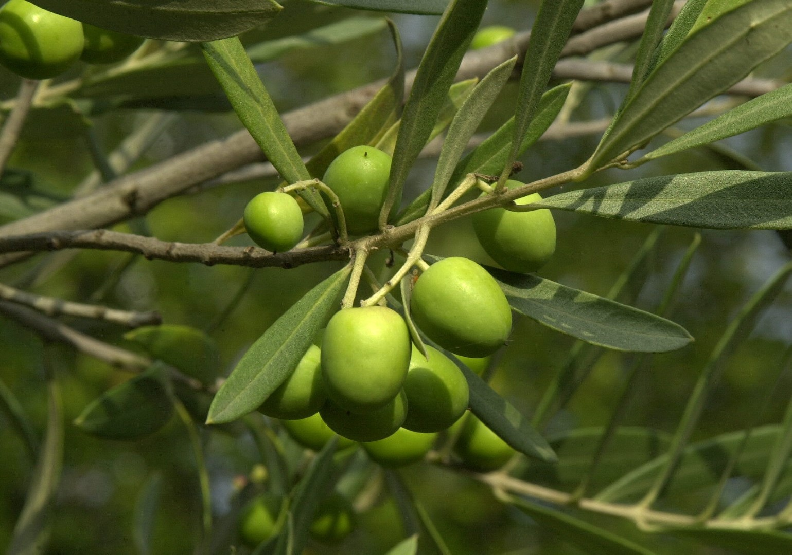

Olive
olea europaea
___________________
Effet:
Anti-œstrogénique
___________________
Méchanisme d'action:
Inhibiteur d'aromatase
___________________
Molécule active:
Oléuropéïne
___________________
Commentaires:
L'oléuropéïne a un IC50 de 27μM sur l'aromatase et une demie-vie d'élimination de 7h. En prenant en compte le fait que l'oléuropéine est présente en moyenne à 10% de la concentration des feuilles d'olives ( sèches ), c'est la source naturelle la plus intéressante en vertu de ses effets sur l'aromatase. Une infusion de quelques feuilles seulement semblerait avoir des effets conséquents sur le système hormonal.
___________________
Sources:
https://www.mdpi.com/2072-6643/8/8/513